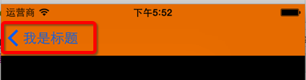
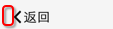
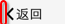

UINavigationBar属性小结及返回按钮更改
UINavigationBar属性
- 如果想统一设置，可以通过以下方法，获取当前类下的所有对象的导航条，然后进行设置
1
| [UINavigationBar appearanceWhenContainedIn:self, nil];
|
1
2
| // barMetrics需要设置成UIBarMetricsDefault
- (void)setBackgroundimages:(UIimages *)backgroundimages forBarMetrics:(UIBarMetrics)barMetrics
|
1
| @property(nonatomic,retain) UIimages *shadowimages
|
1
| @property(nonatomic,retain) UIColor *barTintColor
|
1
| @property(nonatomic,copy) NSDictionary *titleTextAttributes;
|
1
| @property(nonatomic,retain) UIColor *tintColor
|
1
2
3
| // 必须要两个都设置，并且图片要设置成不渲染
@property(nonatomic,retain) UIimages *backIndicatorimages;
@property(nonatomic,retain) UIimages *backIndicatorTransitionMaskimages;
|
1
| - (void)setTitleVerticalPositionAdjustment:(CGFloat)adjustment forBarMetrics:(UIBarMetrics)barMetrics
|
返回按钮更改
系统原装效果:

如果有以下需求:
- 去除上面返回按钮上“我是标题”字样，并设置返回图片为白色
分析
- 图片修改
- 方式1：设置返回图片颜色
- 方式2：直接设置返回图片
- 方式3：使用按钮覆盖返回图片(这种方式会使返回箭头图片和左边距离加大，但可以用取巧的方式调整)
- 文字修改
- 方式1：设置控制器navigationItem的backBarButtonItem显示文字为""
- 方式2：设置返回按钮文字偏移量，使其移出屏幕
- 方式3：采用控制器navigationItem的leftBarButtonItem进行覆盖
解决
综合以上说明，这里给出三种方式(都是针对的自定义UINavigationController)：
- 方式1:在
-pushViewController:animated:中设置文字 ，在+initialize方法中设置返回图片或改变返回图片颜色
1
2
3
4
5
6
| - (void)pushViewController:(UIViewController *)viewController animated:(BOOL)animated
{
viewController.navigationItem.backBarButtonItem = [[UIBarButtonItem alloc] initWithTitle:@"" style:UIBarButtonItemStyleDone target:nil action:nil];
[super pushViewController:viewController animated:animated];
}
|
1
2
3
4
5
6
7
8
9
| // 获取特定类的所有导航条
UINavigationBar *navigationBar = [UINavigationBar appearanceWhenContainedIn:self, nil];
// 方式1：使用自己的图片替换原来的返回图片
navigationBar.backIndicatorImage = [UIImage imageNamed:@"NavBack"];
navigationBar.backIndicatorTransitionMaskImage = [UIImage imageNamed:@"NavBack"];
// 方式2：设置返回图片颜色
navigationBar.tintColor = [UIColor whiteColor];
|
- 方式2:在
+initialize方法中设置所有返回按钮文字的偏移量，其他设置和方式1一致
1
| [[UIBarButtonItem appearance] setBackButtonTitlePositionAdjustment:UIOffsetMake(0, -100) forBarMetrics:UIBarMetricsDefault];
|
- 方式3.重写
-pushViewController:animated:方法,使用控制器的navigationItem的leftBarButtonItem覆盖返回按钮
- 需要判断是否为根控制器，如果是根控制器就不添加
- 导航控制器的
viewControllers.count不为0即表示传入的为非根控制器
1
2
3
4
5
6
7
8
| - (void)pushViewController:(UIViewController *)viewController animated:(BOOL)animated
{
if (self.viewControllers.count != 0) {
viewController.navigationItem.leftBarButtonItem = [[UIBarButtonItem alloc] initWithImage:[UIImage imageNamed:@"NavBack"] style:UIBarButtonItemStyleDone target:self action:@selector(back)];
}
[super pushViewController:viewController animated:animated];
}
|
1
2
3
4
| - (void)back
{
[self popViewControllerAnimated:YES];
}
|
方案对比
- 方案1和方案2改动较小，对系统自带的返回功能无影响。
- 方式3灵活性最高，但是会
使系统的滑动返回失效，需要自己实现，具体实现参照forkingdog全屏手势分类
- 方式3还会使按钮更加偏向右边：

通过以下方式可以使按钮向左边靠：

- 采用customView，添加自己定义的UIButton
1
2
3
4
5
6
7
8
| ...
// 返回按钮内容左靠
button.contentHorizontalAlignment = UIControlContentHorizontalAlignmentLeft;
// 让返回按钮内容继续向左边偏移10
button.contentEdgeInsets = UIEdgeInsetsMake(0, -10, 0, 0);
...
viewController.navigationItem.leftBarButtonItem = [[UIBarButtonItem alloc] initWithCustomView:button];
|